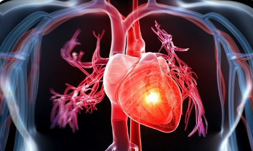
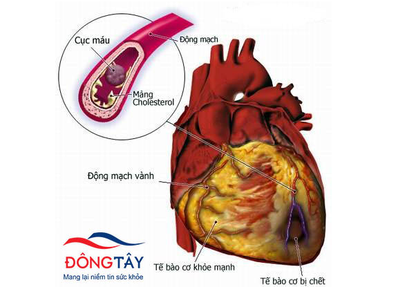

Bệnh tim mạch và hệ tuần hoàn: Nguyên nhân hàng đầu gây tử vong
Bệnh tim mạch là "kẻ giết người thầm lặng" số 1. Tìm hiểu nguyên nhân, yếu tố nguy cơ và cách phòng ngừa hiệu quả để bảo vệ trái tim khỏe mạnh.
Khám phá kiến thức chi tiết về các bệnh lý về tim mạch và tuần hoàn thường gặp. Cung cấp đủ nguyên nhân, triệu chứng và các phương pháp phòng ngừa hiệu quả từ đội ngũ chuyên gia.

Bệnh tim mạch là "kẻ giết người thầm lặng" số 1. Tìm hiểu nguyên nhân, yếu tố nguy cơ và cách phòng ngừa hiệu quả để bảo vệ trái tim khỏe mạnh.
Hơn 1/3 người Việt Nam trưởng thành bị tăng huyết áp. Bệnh thường không có triệu chứng nhưng dễ dẫn đến nhồi máu cơ tim và đột quỵ.
Đau thắt ngực lan ra vai, khó thở, vã mồ hôi lạnh... Đây là cấp cứu tim mạch nguy hiểm nhất cần được xử trí trong giờ vàng.

Tim không bơm đủ máu cho cơ thể. Bệnh gây khó thở, phù chân và mệt mỏi. Có thể kiểm soát tốt nếu tuân thủ điều trị và lối sống.
Đột quỵ là cấp cứu khẩn cấp. Nhớ quy tắc FAST để nhận biết nhanh và gọi cấp cứu ngay nhằm giảm thiểu di chứng nặng nề.